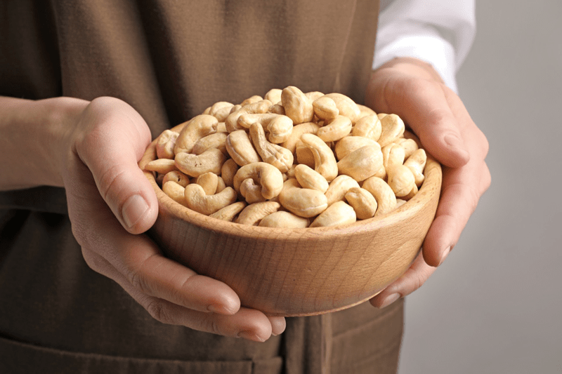
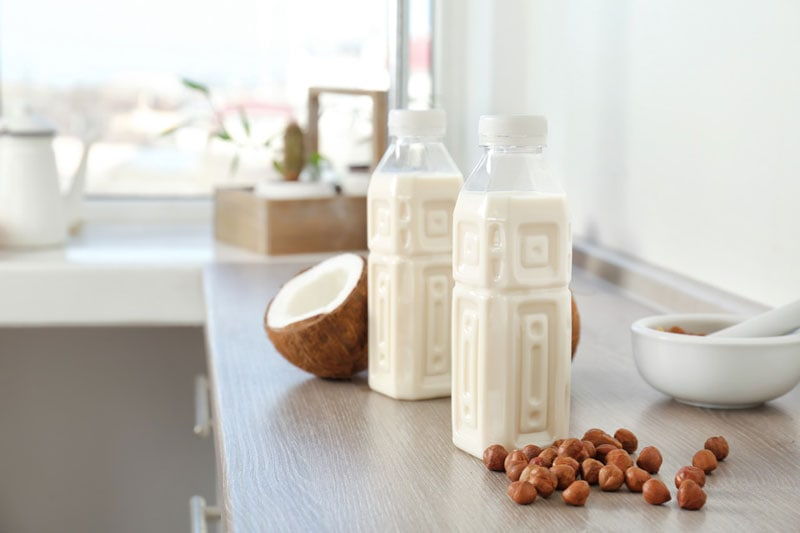
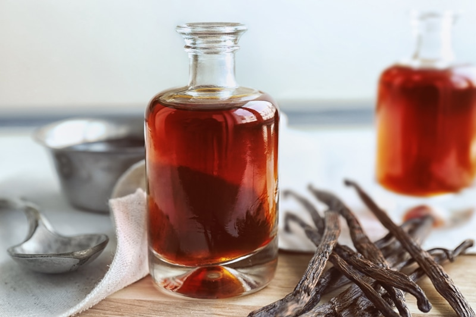

Frosting Template
Creating raw frostings that have the same attributes as commercially made frosting isn’t always easy. We (thankfully) don’t have the aid of stabilizers, preservatives, corn syrup, etc.) to help us when trying to make a frosting that can be piped and withstand hanging out at room temperature. This section will help explain the different roles that ingredients play when it comes to making a raw frosting. I hope you find this helpful. Blessings, amie sue

Soaked Cashews
The purpose of cashews in frosting:
- Soaked cashews blend to an amazing creamy texture that is perfect for frosting making.
- Blended cashews also thicken when chilled, so this helps with the stability of the frosting.
Type of cashews to use:
- It is best to use raw cashews if at all possible. There is a lot of controversy as to whether or not cashews are indeed raw after the complete harvesting process. My word of advice is to research the company you use and do the best you can.
- Do not purchase cashews that they are roasted or salted.
- Cashew pieces tend to less expensive than whole cashews, so I buy those. The only time I need whole cashews is for aesthetic purposes.
Prepping Cashews:
- Soaking the cashews is critical (!), and this step should never be skipped.
- Soaking causes the cashews to swell, giving a bit more volume for the money, and it softens them, which is vital for creating a creamy texture.
- It also helps to reduce the phytic acid that resides in all nuts, which will make it easier on your digestive system.
- All of the measurements for cashews in my recipes are in their dry state.
- Read (here) to learn more about how to soak and why to soak cashews.
Health benefits of cashews: (but not limited to)
- The brain is made up of mostly fat and relies on a steady supply of healthy fatty acids within the diet. Nuts are one of the natural plant foods richest in fat and support cognitive function, healthy aging, and mood regulation.
- Cashews are an excellent source of MUFA fats, which slow the rate at which glucose is released into the bloodstream.
- Cashews support healthy skin due to the presence of essential fatty acids. (source)

Coconut Milk
The role of coconut milk in frosting:
- Coconut milk helps give body and creaminess to the frosting.
- When chilled, coconut milk also thickens, which helps the structure of the frosting.
- It is a healthy fat that also acts as an emulsifier.
Types of coconut milk to use:
- Raw coconut milk:
- Made from Young Thai coconut meat. Learn how to make it (here).
- You will want to create very thick coconut milk, more like a thick cream for frosting recipes. The thicker, the better.
- Do not use coconut milk made from dried coconut.
- Canned coconut milk:
- Not raw, but not everyone has easy access to Young Thai coconut.
- Aim for organic, BPA free, and free of other ingredients.
- Use only full-fat, blending the contents of the can before measuring out.
Health benefits of coconut milk: (but not limited to)
- Studies find that medium-chain triglycerides (MCT) fatty acids found in coconut milk increase energy expenditure and help enhance physical performance.
- Coconut milk also contains the types of MCTs that are easily used by your brain for energy, without even needing to be processed through your digestive tract with bile acids like some other fats.
- Coconut milk nourishes the digestive lining due to its electrolytes and healthy fats, improving gut health and preventing conditions like IBS. (source)
Liquid Sweetener:
The role of maple syrup in frosting:
- The apparent role is for sweetening, but it also adds to the volume of the frosting.
Types of sweeteners to use:
- I use maple syrup because it is more alkalizing for the body than most other liquid sweeteners.
- You can use raw agave, coconut syrup, or any other liquid sweetener that you like to use. But keep in mind that each sweetener has a slightly different flavor profile and viscosity. Choose wisely.
- Do not substitute with a dry sweetener, as this will affect the texture.
- If you are trying to reduce your sugar intake, you can remove roughly a quarter of the sweetener and add in some liquid NuNaturals stevia. This will help to decrease the sugar and brighten the sweet flavor without affecting the taste. Start with 1/4 teaspoon and add more if needed.

Vanilla
The role of vanilla in frosting:
- The role of vanilla in sweet goods is like the role of salt on the savory side: it enhances all the other flavors in the recipe.
- I recommend; Singing Dog Vanilla Extract – No Sugar * No Corn Syrup * No Pesticides No Chemicals * Gluten Free * Free Trade Pure Vanilla Extract made from vanilla beans grown without the use of chemical fertilizers or pesticides. It contains no added sugar or fructose. You can also fine alcohol free vanilla which is always my first choice.
Types of vanilla to use:
- You can use vanilla bean (seeds only), powdered vanilla, vanilla extract, or vanilla paste.
- 1 Tbsp pure vanilla bean paste = 1 vanilla bean
- 1 Tbsp pure vanilla bean paste = 1 Tbsp vanilla bean extract
Health benefits of vanilla: (but not limited to)
- It contains Magnesium, which is a vital mineral necessary for overall health because it regulates the nervous system and acts as a balancing mineral. It assists with both relaxation and energy production.
- Potassium is another mineral found in vanilla, which is needed for healthy blood pressure levels, and it helps with water regulation in the body, proper heart contractions, and helps balance the body’s electrolytes.
- Manganese is essential to a healthy mood, metabolism, optimal nervous system function, and assimilation of other nutrients. (1)
- Did you know that the anti-inflammatory compounds in vanilla are destroyed by excess heat? If the vanilla pods or powder are improperly processed and/or exposed to higher than optimal temperatures, the benefits are lost.

Himalayan Pink Salt
The role of salt in frosting:
- Using salt in desserts does not make the dessert salty. It just wakes up all the flavors in the dish.
- Salt has the power to change the nature of whatever you’re eating, as it elevates and balances the flavors. But it’s all about choosing the right salt and in the right amount.
- Often, when you taste test a frosting, and you feel that it needs a boost of sweetener, try adding a pinch of salt first.
Types of salt to use:
- The most significant offense would be to use your basic iodized table salt.
- It’s best to use natural sea salt that complements the ingredients in the dessert.
- I have written more regarding Himalayan pink salt, click (here). Even the tiniest grain of salt is important.
Health benefits of sea salt: (but not limited to)
- It contains 60 trace minerals, which help you stay hydrated.
- Sufficient sodium levels that help balance your sodium-potassium ratios.
- It contains Powerful electrolytes like magnesium.
- Trace elements required for proper adrenal, immune, and thyroid function.
- Digestive enzyme enhancers, which help your body absorb more nutrients from the foods that you eat. (source)

Coconut Oil
The role of coconut oil in frosting:
- It is a healthy fat but also gives the frosting a nice body.
- Once chilled below 76 degrees, it firms up, making this frosting perfect for decorating.
Types of coconut oil to use:
- Not all coconut oil is equal. Most commercial coconut oils are refined, bleached, and deodorized. Some are even hydrogenated. Read the labels carefully.
- Virgin (unrefined) Coconut Oil has a delicious, tropical coconut scent and flavor. They are made from the first pressing of fresh, raw coconut without the addition of any chemicals.
- Refined Coconut Oil has a neutral scent and flavor. It is not considered raw as it has been deodorized and processed.
Health benefits of coconut oil: (but not limited to)
- Coconut oil is high in natural saturated fats, which is known to increase the healthy cholesterol (known as HDL) in your body but also helps to convert the LDL “bad” cholesterol into good cholesterols.
- Coconut oil contains lauric acid, which is known to reduce candida, fight bacteria, and create a hostile environment for viruses.
- Coconut oil is easy to digest, but also produces a longer sustained energy and increases your metabolism. (source)

Sunflower Lecithin
The role of lecithin in frosting:
- It is a natural emulsifier that binds the fats from nuts with water creating a creamy consistency.
Types of lecithin to use:
- Lecithin comes in many different forms; first, off it is either soy or sunflower based. You will find it comes in powder, granules, and liquid.
- I use powdered sunflower lecithin in most cases. That is my favorite form.
- Liquid lecithin is often a dark amber color and can tint the color of your recipe, so keep that in mind.
Health benefits of lecithin: (but not limited to)
- Sunflower lecithin is made up of essential fatty acids and B vitamins.
- It helps to support the healthy function of the brain, nervous system, and cell membranes.
- It also lubricates joints and helps break up cholesterol in the body.
- To read more about lecithin, please click (here).

Medicine Flower Extracts®
The role of extracts in frosting:
- To state the obvious… they are used to add a variety of flavors to your desserts.
- If you question how to flavor your frosting, so it pairs well with your raw dessert, check out my posting; Flavors that Pair Well in Recipes.
- Medicine Flower Extracts – they are powerful, a little bit goes a long way (1-5 drops of our flavors equal up to a teaspoon of other flavors). They have over 40 incredible flavors!
- Water and oil soluble, all of their flavors are highly concentrated, contain no sugar or calories, and are wheat- and gluten-free.
- You can add a hint of flavor without disrupting the color of the frosting, which is important if you wish for your frosting to remain white.
Some of the health benefits of Medicine Flower flavorings
- You can reduce the number of calories and add other macronutrients to the frosting recipe.
- They are 100% genuine flavor extract, no added preservatives (some contain 5% alcohol).
- They don’t contain harmful food dyes or other chemicals.
 Natural Food Coloring:
Natural Food Coloring:
The role of coloring in frosting:
- To add color! We all need a little color in our lives. Colors can bring food to life and create a statement.
Types of ingredients to use:
The dangers of commercial food colorings:
- Blue #1 (Brilliant Blue) – cause hypersensitivity reactions
- Blue #2 (Indigo Carmine) – Causes a statistically significant incidence of tumors, particularly brain gliomas, in male rats. Other reported symptoms; asthma, skin rash, and hives. Already banned in Norway, Belgium, Australia, Sweden, Switzerland, France, Germany, and Great Britain
- Citrus Red #2 – It’s toxic to rodents at modest levels and caused tumors of the urinary bladder and possibly other organs.
- Green #3 (Fast Green) – caused significant increases in bladder and testes tumors in male rats.
- Red #3 (Erythrosine) – link to thyroid cancer and hyperactivity in children, other studies on lab rats, linked high levels to general behavioral changes, sperm abnormalities, and DNA damage.
- Red #40 (Allura Red) – this is the most widely used and consumed dye. Often contains aluminum and other metals. It may accelerate the appearance of immune-system tumors in mice. Children are especially sensitive and experience symptoms such as aggressive behavior, temper tantrums, and uncontrollable crying
- Yellow #5 (Tartrazine) – can cause sometimes-severe hypersensitivity reactions and might trigger hyperactivity and other behavioral effects in children. There are reports that it can cause asthma, headaches, hives, and skin rashes.
- Yellow #6 (Sunset Yellow) – Caused adrenal tumors in animals and occasionally caused severe hypersensitivity reactions. It is banned in Norway and Finland.
- If you want to Geek-out on more scientific reading, click (here).
- (sources, 1, 2)
© AmieSue.com